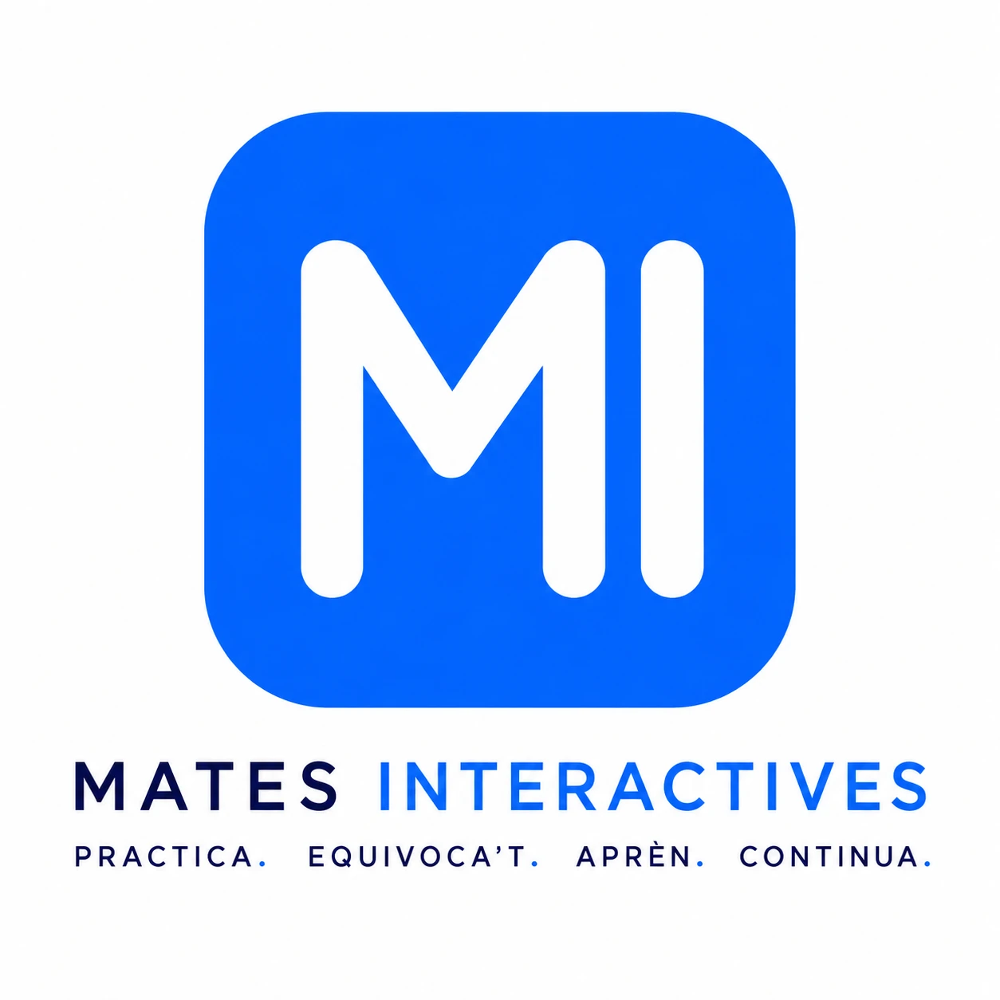

⚡ Correcció immediata
Practica amb exercicis autocorrectius, comprova cada resposta a l'instant i entén els errors amb les explicacions.

Plataforma educativa gratuïta
Aprèn matemàtiques amb teoria clara, exemples resolts i exercicis interactius adaptats al currículum de Catalunya. Entén els conceptes, corregeix els errors i avança al teu ritme.
Carregant el cercador…
Entén els conceptes amb la teoria i consolida els coneixements practicant, equivocant-te i millorant pas a pas.
Practica amb exercicis autocorrectius, comprova cada resposta a l'instant i entén els errors amb les explicacions.
Consulta explicacions clares, exemples pas a pas i resums essencials abans de posar-te a practicar.
Teoria i exercicis organitzats segons el currículum oficial de Catalunya perquè puguis treballar cada tema quan toca.
Funciona des de qualsevol dispositiu, sense instal·lar cap aplicació i completament des del navegador.
Tria el teu curs de 1r a 4t d'ESO i accedeix a la teoria i als exercicis de cada sentit matemàtic.
Teoria amb exemples resolts i exercicis interactius amb correcció immediata.
ComençaTeoria amb exemples resolts i exercicis interactius amb correcció immediata.
ComençaTeoria amb exemples resolts i exercicis interactius amb correcció immediata.
ComençaTeoria amb exemples resolts i exercicis interactius amb correcció immediata.
ComençaResol un exercici aleatori de 1r a 4t ESO i comprova com funciona Mates Interactives.
Mates Interactives neix amb un objectiu molt senzill: ajudar els estudiants a entendre les matemàtiques i aprendre practicant. Creiem que equivocar-se forma part del procés d'aprenentatge i que cada exercici és una oportunitat per millorar.
Combinem teoria amb exemples resolts i exercicis interactius amb correcció immediata. La plataforma és completament gratuïta, està adaptada al currículum de Catalunya i evoluciona constantment amb nous recursos, activitats i cursos.
Si Mates Interactives t'ha ajudat, pots contribuir a mantenir aquest projecte viu.
Les donacions es destinen íntegrament a crear nous exercicis, millorar la plataforma i incorporar nous cursos perquè cada vegada sigui més útil per als estudiants.
☕ Convida'm a un cafè